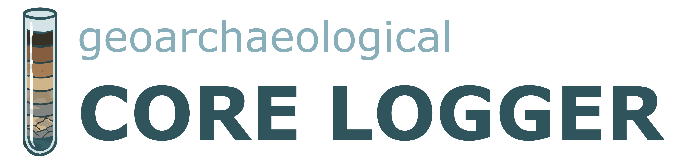

// TESTVERSION //
Punktfund / Probe (Optional)
Schicht hinzufügen
+ Marker
ID
Tiefe (m)
Farbe
Ansprache
Beschreibung / Funde
Aktion
Daten als TSV kopieren
Stratigraphisches Profil
↕ Scrollen um das gesamte Profil zu sehen
Download JPG
Download SVG